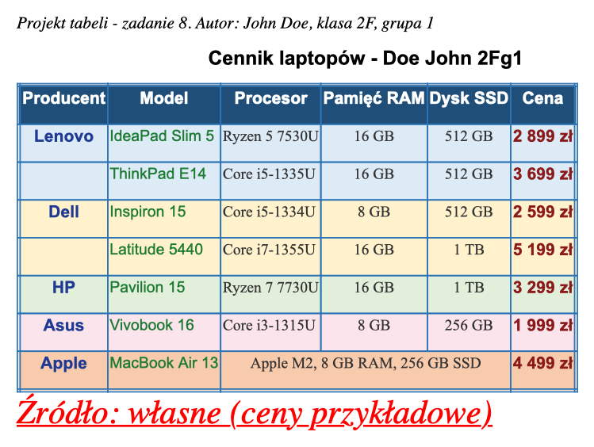

Zadanie 8 z 11
Projekt tabeli w Word
To zadanie nie zmienia strony. Tabelę projektujesz w Wordzie albo w OpenOffice. Strona w folderze zadanie8 jest taka sama jak po zadaniu 7, doszedł tylko plik .docx. W zadaniu 9 zbudujesz tę samą tabelę w HTML.
Co trzeba zrobić
- Wymyśl tabelę na temat informatyczny i zaprojektuj ją w edytorze tekstu (Word lub OpenOffice), nie w HTML.
- Zapisz plik jako
nazwisko_klasa_grupa.docx, na przykładdoe_2F_g1.docx. - Tabela ma mieć co najmniej 30 komórek. Komórka scalona liczy się jako jedna, wiersz nagłówka też się liczy.
- Nad tabelą: tytuł z treścią tabeli oraz nazwisko, imię i klasa.
- Pierwszy wiersz to nagłówek kolumn, pozostałe wiersze to dane. W zadaniu 9 będą to
<thead>i<tbody>. - Scal w poziomie co najmniej 3 komórki i w pionie 2 komórki.
- Użyj co najmniej 4 kolorów tła wierszy.
- Ramka: kolor inny niż czarny, wybrany rodzaj linii i grubość. Ramka zewnętrzna 4 razy grubsza niż ramki wewnętrzne.
- W kolumnach: co najmniej 3 kolory tekstu, 2 rozmiary czcionki, 2 kroje czcionki, wyrównanie do lewej, do prawej i do środka.
- Pod tabelą: źródło danych, kursywą, podkreślone, czerwone, rozmiar 6 z 7 (w Wordzie 24 pkt).
Gotowy projekt

Jak projekt spełnia wymagania
| Wymaganie | W projekcie |
|---|---|
| 30 komórek | 44 komórki: 6 w nagłówku i 38 w danych. Policz każdą scaloną komórkę raz. |
| Tytuł | Cennik laptopów - Doe John 2Fg1: treść, nazwisko, imię, klasa i grupa. |
| Scalenie w pionie | „Lenovo” i „Dell”: każda z tych komórek zajmuje 2 wiersze, bo producent ma 2 modele. |
| Scalenie w poziomie | Wiersz Apple: „Apple M2, 8 GB RAM, 256 GB SSD” zajmuje 3 kolumny (procesor, RAM, dysk). |
| 4 kolory wierszy | 6 kolorów: granatowy nagłówek oraz niebieski, żółty, zielony, różowy i pomarańczowy dla producentów. |
| Ramka | Niebieska (#2E75B6). Zewnętrzna: podwójna linia 3 pkt. Wewnętrzne: pojedyncza linia 0,75 pkt. 3 = 4 × 0,75. |
| 3 kolory tekstu | Producent granatowy, model zielony, cena bordowa, reszta ciemnoszara. |
| 2 rozmiary | 12 pkt (producent, cena) i 11 pkt (pozostałe kolumny). |
| 2 kroje | Arial (producent, model, cena) i Times New Roman (procesor, RAM, dysk). |
| Wyrównanie | Model i procesor do lewej, producent, RAM i dysk do środka, cena do prawej. |
| Źródło | „Źródło: własne (ceny przykładowe)”: kursywa, podkreślenie, czerwony, 24 pkt. |
Jak to zrobić w Wordzie
- Wstaw tabelę: Wstawianie → Tabela. Najpierw policz wiersze i kolumny przed scaleniem: tu 8 wierszy i 6 kolumn.
- Scal komórki: zaznacz komórki → prawy przycisk myszy → Scal komórki.
- Kolor tła: zaznacz wiersz → Projektowanie tabeli → Cieniowanie.
- Ramka: zaznacz tabelę → Projektowanie tabeli → Obramowania → Obramowanie i cieniowanie. Ustaw osobno „Wewnątrz” i „Krawędź zewnętrzna”.
- Kolor, krój i rozmiar tekstu: zaznacz kolumnę (kliknij nad nią, gdy kursor zmieni się w strzałkę) i ustaw na karcie Narzędzia główne.
Rozmiar 6 z 7. HTML ma 7 rozmiarów czcionki (zobacz zadanie 7). Rozmiar 6 to 32 piksele, czyli około 24 punktów w Wordzie.
Wybierz tabelę, którą łatwo zbudujesz w HTML. W zadaniu 9 każdy kolor, każde scalenie i każda ramka z projektu musi się znaleźć w kodzie. Scalenie w pionie to rowspan, a w poziomie colspan.
Co się zmieniło w kodzie
Plik index.html jest taki sam jak po zadaniu 7.
Nowe pliki w folderze
doe_2F_g1.docx
Pełny kod index.html po zadaniu 8
Pokaż kod
<!DOCTYPE html> <html lang="pl"> <head> <meta charset="UTF-8"> <meta name="author" content="John Doe"> <meta name="description" content="Strona ucznia John Doe - zadania HTML"> <title>John Doe - zadania HTML</title> </head> <!-- Autor: Doe John, szkoła: ZSE Gdańsk, klasa: 2F grupa 1 --> <body style="background-color: #CCFFCC;"> <a href="walidacja_doe.html">Walidacja strony - zadanie 7</a> <span id="poczatek"></span> <p><b>Menu - góra strony</b></p> <a href="poczta_doe.html">Link do poczty</a><br> <a href="plik_doe.html">Link do ściągania pliku</a><br> <a href="#srodek">Link do środka tekstu</a><br> <a href="#koniec">Link do końca tekstu</a><br> <a href="tabela_doe.html">Link do strony zawierającej tabelę</a><br> <a href="formularz_doe.html">Link do strony zawierającej formularz</a><br> <!-- imię 7 razy; numer w dzienniku 7 (nieparzysty), więc od size 7 do size 1 --> <p style="text-align: right;"><span style="color: blue; font-size: 48px; font-family: 'Arial';"><b>John</b></span></p><br> <p style="text-align: left;"><span style="color: blue; font-size: 32px; font-family: 'Verdana';"><i>John</i></span></p><br> <p style="text-align: center;"><span style="color: navy; font-size: 24px; font-family: 'Times New Roman';"><u>John</u></span></p><br> <p style="text-align: right;"><span style="color: purple; font-size: 18px; font-family: 'Courier New';"><s>John</s></span></p><br> <p style="text-align: left;"><span style="color: teal; font-size: 16px; font-family: 'Arial';">John</span></p><br> <p style="text-align: right;"><span style="color: maroon; font-size: 13px; font-family: 'Verdana';">John</span></p><br> <p style="text-align: center;"><span style="color: olive; font-size: 10px; font-family: 'Times New Roman';">John</span></p><br> <!-- nazwisko 6 razy; numer nieparzysty, więc od H6 do H1 --> <h6>Doe</h6><br> <h5>Doe</h5><br> <h4>Doe</h4><br> <h3>Doe</h3><br> <h2>Doe</h2><br> <h1>Doe</h1><br> <!-- sześć emotikonów: każdy inny kolor, wielkość i czcionka --> <p><span style="color: orange; font-size: 32px; font-family: 'Courier New';">:-) uśmiech, jestem zadowolony</span></p><br> <p><span style="color: red; font-size: 24px; font-family: 'Times New Roman';">:-( smutek, coś poszło źle</span></p><br> <p><span style="color: green; font-size: 18px; font-family: 'Verdana';">;-) mrugnięcie, to był żart</span></p><br> <p><span style="color: blue; font-size: 16px; font-family: 'Courier New';">:-D głośny śmiech</span></p><br> <p><span style="color: purple; font-size: 24px; font-family: 'Verdana';">:-P pokazuję język</span></p><br> <p><span style="color: brown; font-size: 18px; font-family: 'Times New Roman';">:-O zdziwienie</span></p><br> <!-- zadanie 2: dane ucznia (fałszywe, ale prawdopodobne) --> <p style="text-align: right;"><span style="color: red; font-size: 16px; font-family: 'Arial';"><u>80-188 Gdańsk, ul. Długa 12/5</u></span></p><br> <p style="text-align: left;"><span style="color: blue; font-size: 18px; font-family: 'Verdana';"><b>Ulubiony aktor: Tom Hanks</b></span></p><br> <p style="text-align: center;"><span style="color: green; font-size: 24px; font-family: 'Times New Roman';"><i>Ulubiony zespół: Queen</i></span></p><br> <p style="text-align: right;"><span style="color: purple; font-size: 16px; font-family: 'Courier New';"><s>Data urodzenia: 14 marca 2009</s></span></p><br> <p style="text-align: left;"><span style="color: black; font-size: 18px; font-family: 'Arial';">Wzór kwasu: H<sub>2</sub>SO<sub>4</sub></span></p><br> <p style="text-align: left;"><span style="color: black; font-size: 18px; font-family: 'Arial';">Potęga: x*x=x<sup>2</sup></span></p><br> <!-- zadanie 3: 10 spacji niełamliwych między nazwiskiem a imieniem --> <p>Doe John</p> <span id="srodek"></span> <p><b>Menu - środek strony</b></p> <a href="poczta_doe.html">Link do poczty</a><br> <a href="plik_doe.html">Link do ściągania pliku</a><br> <a href="#poczatek">Link początek tekstu</a><br> <a href="#koniec">Link do końca tekstu</a><br> <a href="tabela_doe.html">Link do strony zawierającej tabelę</a><br> <a href="formularz_doe.html">Link do strony zawierającej formularz</a><br> <!-- zadanie 3: dowcipy w obramowaniu z legendą --> <h1 style="text-align: right;">Dowcipy o informatykach</h1> <fieldset> <legend>Programista w sklepie</legend> <img src="grafika1.gif" style="float: right; border: 24px solid #336699; margin: 4px;" width="114" height="107" alt="grafika1-Doe"> Żona mówi do programisty:<br> - Kup chleb, a jak będą jajka, to weź dziesięć.<br> Programista wraca z dziesięcioma chlebami.<br> - Dlaczego tyle chleba?<br> - Bo były jajka.<br> </fieldset> <fieldset> <legend>Restart</legend> <img src="grafika2.gif" style="float: left; border: 13px solid #336699; margin: 4px;" width="103" height="103" alt="grafika2-Doe"> Uczeń pyta informatyka:<br> - Co robić, gdy komputer nie działa?<br> - Wyłącz i włącz.<br> - A jak dalej nie działa?<br> - Wyłącz i idź na spacer.<br> </fieldset> <hr style="height: 2px; width: 80%; background-color: red; border: none;"> <h2 style="text-align: left;">Dowcipy o szkole</h2> <fieldset> <legend>Klasówka</legend> <img src="grafika3.gif" style="float: right; border: 17px solid #336699; margin: 4px;" width="107" height="114" alt="grafika3-Doe"> Nauczyciel:<br> - Jasiu, dlaczego masz pustą kartkę?<br> - Bo nie lubię ściągać.<br> </fieldset> <fieldset> <legend>Zadanie domowe</legend> <img src="grafika4.gif" style="float: left; border: 13px solid #336699; margin: 4px;" width="103" height="103" alt="grafika4-Doe"> - Gdzie jest twoje zadanie domowe?<br> - Zjadł je mój pies.<br> - Przecież nie masz psa.<br> - To był pies kolegi.<br> </fieldset> <hr style="height: 6px; width: 50%; background-color: blue; border: none;"> <h3 style="text-align: center;">Dowcipy o zwierzętach</h3> <fieldset> <legend>Kot i mysz</legend> <img src="grafika5.gif" style="float: right; border: 14px solid #336699; margin: 4px;" width="104" height="104" alt="grafika5-Doe"> Dlaczego kot siedzi przy komputerze?<br> Bo pilnuje myszy.<br> </fieldset> <hr style="height: 10px; width: 30%; background-color: green; border: none;"> <!-- zadanie 4: wyliczenia i numerowania o informatyce --> <br><br><br> <h1>Poniżej są trzy wyliczenia z różnymi znakami wyliczenia</h1> <ul style="list-style-type: square;"> <li>procesor</li> <li>pamięć RAM</li> <li>dysk SSD</li> </ul> <ul style="list-style-type: disc;"> <li>klawiatura</li> <li>mysz</li> <li>monitor</li> </ul> <ul style="list-style-type: circle;"> <li>Windows</li> <li>Linux</li> <li>macOS</li> </ul> <br><br><br> <h2>Poniżej są trzy numerowania z różnymi znakami numerowania</h2> <!-- numeracja zaczyna się od numeru w dzienniku: 7 --> <ol type="1" start="7"> <li>HTML</li> <li>CSS</li> <li>JavaScript</li> </ol> <ol type="A" start="7"> <li>router</li> <li>switch</li> <li>serwer</li> </ol> <ol type="I" start="7"> <li>Chrome</li> <li>Firefox</li> <li>Edge</li> </ol> <br><br><br> <h3>Poniżej są trzy poziomy numerowania/wyliczenia</h3> <ol type="1"> <li>Sprzęt <ul style="list-style-type: square;"> <li>Podzespoły <ol type="a"> <li>płyta główna</li> <li>karta graficzna</li> </ol> </li> <li>Urządzenia peryferyjne <ol type="a"> <li>drukarka</li> <li>skaner</li> </ol> </li> </ul> </li> <li>Oprogramowanie <ul style="list-style-type: square;"> <li>Systemy operacyjne <ol type="a"> <li>Windows</li> <li>Linux</li> </ol> </li> </ul> </li> </ol> <span id="koniec"></span> <p><b>Menu - dół strony</b></p> <a href="poczta_doe.html">Link do poczty</a><br> <a href="plik_doe.html">Link do ściągania pliku</a><br> <a href="#poczatek">Link początek tekstu</a><br> <a href="#srodek">Link do środka tekstu</a><br> <a href="tabela_doe.html">Link do strony zawierającej tabelę</a><br> <a href="formularz_doe.html">Link do strony zawierającej formularz</a><br> <!-- zadanie 3: 7 znaków specjalnych na końcu strony --> <p>© ® ™ € § ♥ ¶</p> </body> </html>